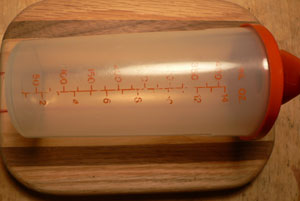

Cooking 101, Leland’s salad dressing
Mark Bittman has a nice piece on salad dressing in this week’s dining section. He writes off most bottled dressings and insists that “taking two minutes to combine extra virgin olive oil, vinegar and a couple of real seasonings is an enlightening experience, one that can make you vow to leave the mass-produced concoctions of cheap oil, water (more water than oil, if it’s low-fat), dried spices and hideously unnatural chemicals on the supermarket shelf.” I couldn’t agree more.
If someone opens a bag of lettuce and a few other bags of various salad toppings and teams it with a bottle of dressing, I’ll eat it and never think of it again. However, I’m always disappointed when someone has gone to some kind of trouble to wash lettuce or chop vegetables or cheese, all just to overshadow his work with a heavy pour from the oily bottle of Newman’s Own dressing that’s been in the refrigerator door for six months. Salad takes time and care, and I appreciate a beautiful homemade salad as much as the rest of the meal.
Mom taught me to make salad dressing when I had my first kitchen several years ago. I had never tasted a bottled dressing at that time, so it wouldn’t have even occurred to me to buy one. My dressing is slightly different from hers, and she probably wouldn’t like it very much, as I prefer it strong with the taste of vinegar and mustard.
If you’re eating salad every day or even twice a week, it’s worth getting in the habit of whisking yourself up a bit of dressing. As far as I can tell, you don’t even have to refrigerate it, although I do it out of habit. Adjust the flavorings to your own taste; it helps to mix it in a measuring cup or a dressing shaker, like this vintage Tupperware beauty that Uncle Ted gave me:

because you can keep an eye on how much vinegar you’re using and what you like. At this point, I do it in a bowl and know that I’m done when the dressing coats the side of the bowl in a certain way.
For enough dressing for a big salad, start with 50 milliliters of balsamic vinegar (Mom prefers white, I prefer dark). Whisk in about a teaspoon of whole grain mustard and a bit of salt and pepper, and a squeeze of lemon juice if you happen to have a cut lemon. Begin to pour in extra virgin olive oil while whisking. You’ll need at least 100 milliliters, but it will be to taste and according to your own preferences. Before serving, give it a final whisk to emulsify it well. A bit of garlic or shallot or soy sauce is nice, but keeping it simple is nice too.
I hate pouring dressing on my own plate. If it’s at all possible, toss the dressing with the salad so that every (well-spun) leaf is lightly coated. All of this information is probably old-hat to most of Eat’s readers, but we’ve been in a 101 spirit recently. This is exactly the kind of information I needed years ago, and I’m sure someone, somewhere, will benefit from it.
Comments
Good post, Leland! I’m always amazed at how many people are still putting bottles of dressing on the table. Even the better ones, like Newman’s, are made with ingredients you wouldn’t use at home, like soy oil.
I am thinking of switching to sherry vinegar after reading Lobstersquad’s ode to it recently and I’m sure I’ll be eating a lot of it next month in Spain, since I gather it’s that country’s version of balsamic.
One bone to pick with you regarding your post, though: what are milliliters, exactly, and why are you giving the recipe in them and not the more common English measurements that we use in this country? :)
Thanks, Mom! Hmm, do you measure in cups? I have always used ml for salad dressing, because that’s what is on my shaker. Don’t all measuring cups have ml on them?
According to google, 50 ml = 0.21 US cups.
Sherry vinegar can be very delicate and delicious. Sounds like it would make a nice stocking stuffer for someone special.
I’ve been thinking about posting on salad dressing too …
I use a kind of scientific bottle (with ml, which I never use because its just 1:2, right?) with an orange plastic top which a friend lifted from her lab to complete her mad scientist Halloween costume and then no one felt comfortable returning it.
This is really quite strange because my parents have always used a scientific bottle (with a ground glass stopper) that THEY lifted from a science lab back in the day when ground glass stoppers were more the thing. If it had measures on it they had worn off by the time I was eating salad.
Anyway, 1:2, we used to make it with red wine vinegar, then later balsamic. There was a brief period when my mom added a teaspoon of raspberry jelly, if it was around (this was when I was in college and taught my friends to make dressing and they appreciate it to this day). Now she says she doesn’t remember doing this!
And one can add mustard and garlic and salt and pepper and whatever in the amounts one likes.
There were also times when my mom would add dried herbs.
Every now and then when I’ve made a big meal with lots of steps and then I realize I don’t have salad dressing I think about “getting out of the salad dressing business” but I’ve never found a bottled dressing I like. Those not-creamy ginger ones are kind of nice, though. But they don’t go with everything.
Between the applesauce and the salad dressing, you guys here at Eat sure bring out the “me and my mom” stories buried deep within me!
And I’m going to post a photo of dressing bottle at my flicr site. I love love love yours.
You folks actually measure your ingredients, huh?
Here are some of the things I like to do with salad:
-I start with minced shallots, salt, and vinegar in a bowl and let the shallots sort of pickle for five minutes before I add more ingredients. These five-minute shallots (without the added oil/mustard/herbs) are also a great condiment on hot dogs and hambugers.
-I mix the vinaigrette in the very same wood salad bowl where the lettuce will go after rubbing the bowl with a clove of smashed garlic, which I then discard. If I am going to make only enough vinaigrette for one salad, I prefer to mix it in the bowl where the salad will go to make cleanup easier.
-Sometimes I make a creamy dressing with a little bit of commercial mayonnaise thinned with some combination of white wine vinegar, lemon juice, herbs (basil and tarragon are my favorites for this), buttermilk and/or garlic or shallots. These go well on heartier greens like Romaine or iceberg (which I do love) but not so well on delicate leaf lettuces, arugula, etc.
There are some jarred dressings that are impossible to replicate yourself that I like to have on hand, esp. Kraft Thousand Island and Hidden Valley Ranch. Not all store-bought dressing is bad, though of course the low-fat varieties are hardly edible at all.
“I mix the vinaigrette in the very same wood salad bowl where the lettuce will go after rubbing the bowl with a clove of smashed garlic, which I then discard.”
Just like in the movies.
Specifically, I am thinking of some sort of French slapstick movie or slapstick movie set in France or maybe just a French restaurant . . . does anybody know the movie I’m talking about . . . ? I think it is black and white . . . ?
I grew up with that kind of Tupperware container! Ah, the memories. I have yet to make my own salad dressing, but I should. This is delicious sounding incentive.
My personal favorite homemade dressing is just dijon mustard, red wine vinegar, olive oil, salt and pepper. Shallots are a good addition, though. Mmm… so good.
It’s amazing to me how satisfying a simple green salad with a good vinaigrette is.
So many great ideas from you guys! Michael: I especially like your technique of rubbing the bowl with garlic. Maybe that’s finally the good way to add the aroma of garlic to a salad without overwhelming it.
Thank you all for reading and commenting!
salad dressing is easy to make 1 cup water to table spoons honey fresh clover olive oil a dash and mix well then add a tea spoon of salt and pepper dash of vinigret and walla french salad dressing put in frige over night
Add a comment